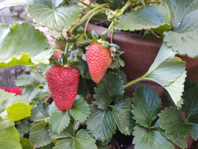
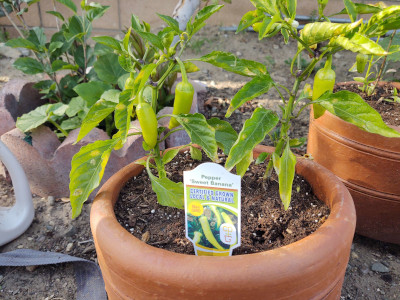

Fuits

Fruits are a big part of most people's diets being both a tasty treat and a healthy snack.
Fruiting plants come in all shapes and sizes from large trees so small individual plants that can be kept in pots.
What you decide to grow will depend on the space that you have available as well as what you would like to eat.
There is a lot of variety to choose from from something as small as a strawberry to something as big as a papaya.
Vegetables

Vegetables are different from fruits in the sense that they are not necessarily used as nacks but more as cooking ingredients
Vegetables also grow differently from fruits as they're usually individual plants and not something that is grown as a fruit
The dilema of what to grow is the same as with fruits. It is all up to your available space as well as the space you have availale
Luckily most vegetables don't need much space and can be grown in pots.